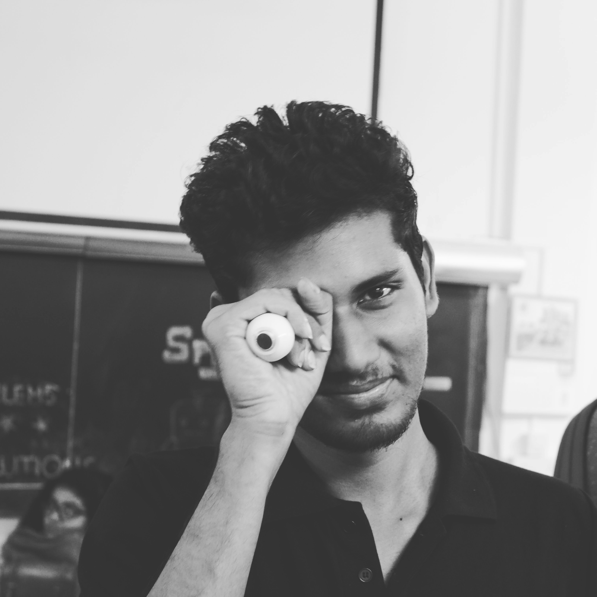

I am currently working as a Research Assistant in Spectrum Lab under the supervision of Dr. Chandra Sekhar Seelamantula at the Indian Institute of Science, Banglore, India. I finished my undergraduate in Electrical and Electronics Engineering with a minor specialization in signal processing and control from Manipal Institute of Technology, Karnataka, India.
My work is mainly focused on Medical Image Analysis using image processing and computer vision techniques. At Present, I am exploring Neural Architecture Search (NAS) techniques for the analysis of medical images.